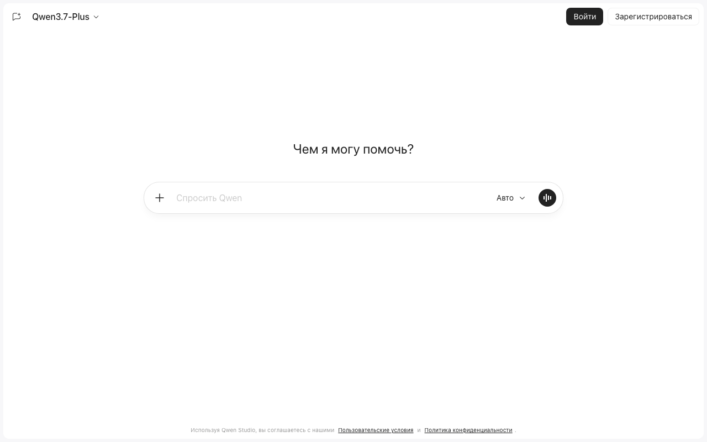
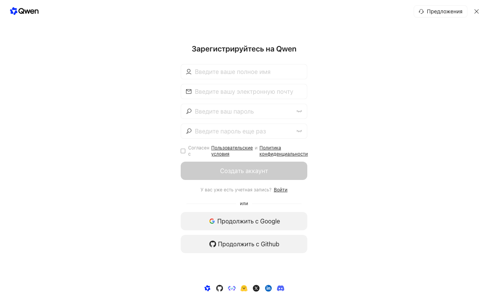
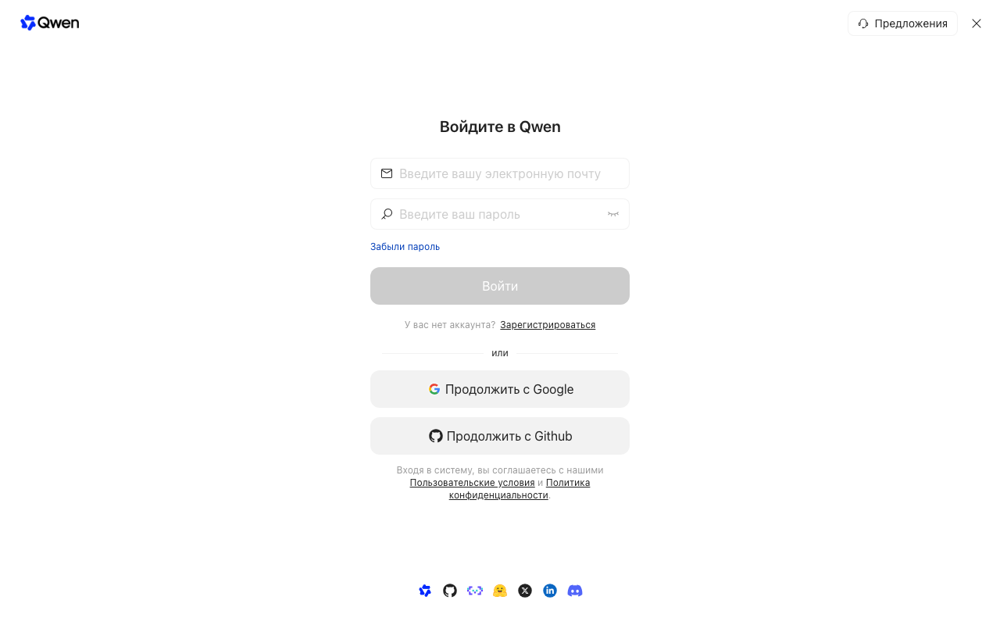
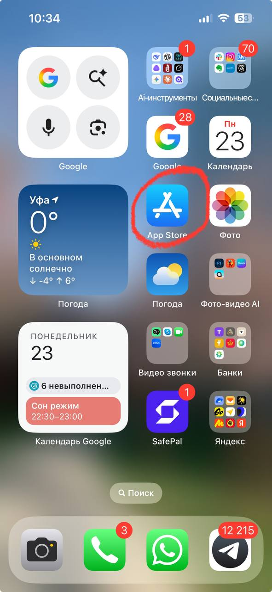
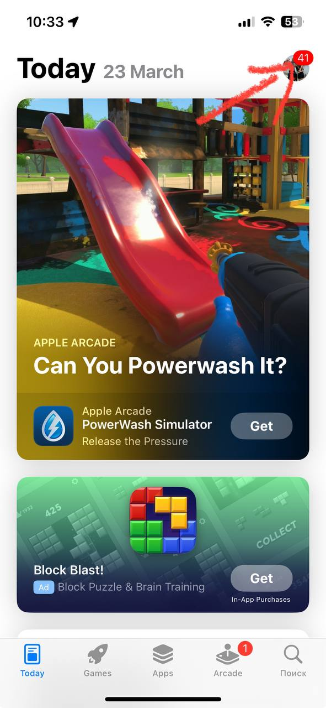
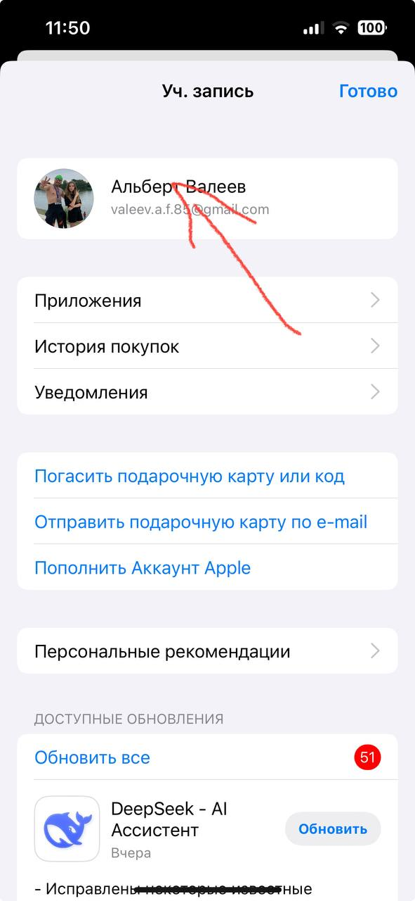
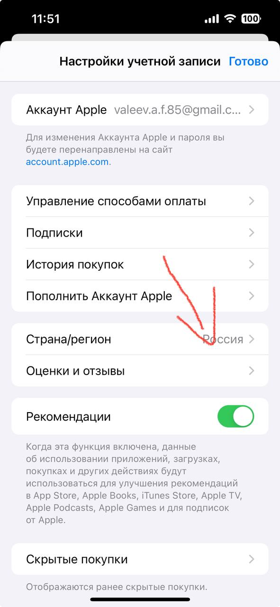
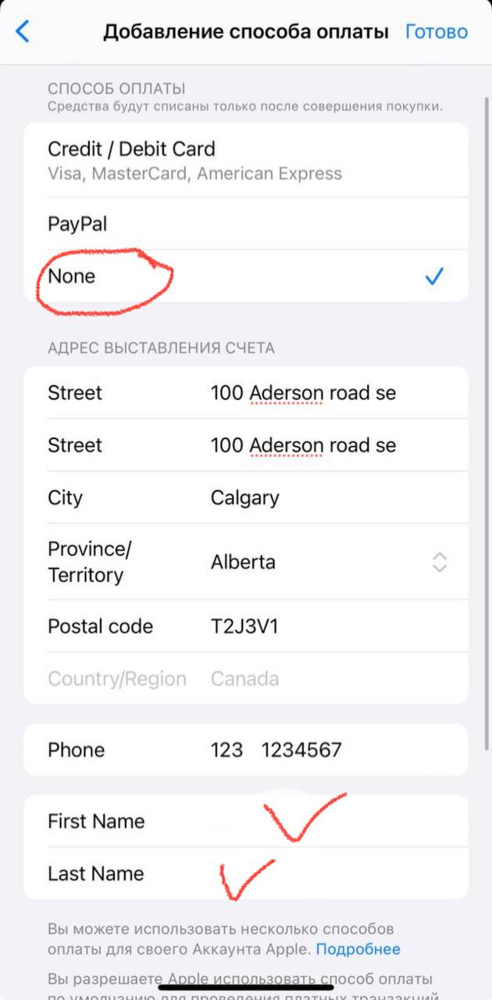

Супергайд участника
ИИ в работе МФЦ
Всё с мастер-класса 6 октября и Барсетка энтузиаста. Команда МФЦ Республики Башкортостан · Альберт Валеев
Что внутри
- АМатериалы мастер-класса
- БОткрыть ИИ где угодно
- Б1Qwen за пять минут
- Б2Приложения на iPhone
- Б3Приложения на Android
- Б4Оплата ChatGPT Plus
- 1Он смотрит на вас со стороны
- 2Не только текстом: голос, фото, файл
- 3Второй круг промпт-инженерии: 12 механик
- 4Экзамен для нового сотрудника
- 520 промптов личной эффективности
- 615 промптов для жизни
Материалы мастер-класса
Открыть ИИ где угодно
Без VPN, бесплатно
Qwen · chat.qwen.aiНаш основной инструмент: персонализация, память, файлы, фото, голос↗ GigaChat · giga.chatРоссийская нейросеть Сбера. Все промпты из этого гайда работают и здесь↗ Алиса · alice.yandex.ruРоссийская нейросеть Яндекса. Промпты те же↗Qwen за пять минут: регистрация и вход
Бесплатный ИИ-чат от Alibaba, понимает и пишет по-русски. Сайт chat.qwen.ai, называется Qwen Studio. VPN не нужен.
- Откройте сайтВ любом браузере: Яндекс Браузер, Chrome, Edge. Адрес chat.qwen.ai. Справа сверху две кнопки: «Войти» и «Зарегистрироваться». Если браузер на английском, это Log in и Sign up.

- Нажмите «Зарегистрироваться» и выберите способЧерез Google: внизу кнопка «Продолжить с Google», выбрали аккаунт, и готово. Или по почте: полное имя, почта, пароль дважды, галочка согласия, «Создать аккаунт». Подойдёт любая почта: Яндекс, Mail.ru, Gmail.

- Подтвердите почтуЕсли регистрировались по почте, Qwen пришлёт письмо: подтвердите адрес по ссылке или коду. Письмо иногда попадает в «Спам». При входе через Google этого шага нет.
- Проверьте, что вы вошлиСправа сверху вместо кнопок появился значок профиля. Напишите в поле «Спросить Qwen» любой вопрос по-русски. Ответ по-русски значит, всё работает.
- Запомните, как входилиЧерез Google или по почте, и какой пароль. Вход всегда через кнопку «Войти» на главной.

Если что-то не получается
- Сайт не открывается или висит. Обновите страницу, попробуйте другой браузер. Если на рабочем компьютере сайт закрыт сетью, работайте с телефона.
- Не пришло письмо. Подождите пять минут, проверьте «Спам». Не пришло совсем: войдите через Google.
- Забыли пароль. На странице входа «Забыли пароль» или вход через Google.
- Открылся другой Qwen. Нужен только чат на chat.qwen.ai. Qwen Code и страницы для разработчиков не подходят.
Qwen на телефоне
Qwen Studio для iPhoneВ российском App Store, менять регион не нужно↗Qwen Studio для AndroidВ Google Play. Если не ставится, chat.qwen.ai в браузере телефона работает так же↗Приложения ИИ на iPhone
Qwen есть в российском App Store, его ставьте как обычно. Чтобы скачать ChatGPT и другие зарубежные приложения, нужно сменить регион App Store на Канаду. Это безопасно, занимает пять минут, аккаунт остаётся прежним.
- Откройте App StoreИконка на главном экране: синяя, с буквой «A».

- Нажмите на аватарВ правом верхнем углу App Store иконка вашего профиля: кружок с фото или инициалами.

- Смените страну на КанадуНажмите на своё имя (учётная запись), найдите «Страна/регион». Сейчас там «Россия»: нажмите и выберите «Canada». Согласитесь с условиями.


- Заполните данные для КанадыПоявится форма «Добавление способа оплаты». Способ оплаты: «None», карту привязывать не нужно. Адрес вставьте из рамок ниже. Имя и фамилию напишите латиницей, например Sergey Ivanov. Потом «Готово» справа сверху.
100 Aderson road se
Calgary
Alberta
T2J3V1
123 1234567

- Скачайте приложенияТеперь в App Store доступны все ИИ-приложения. ChatGPT открывайте с включённым VPN. Qwen работает и без VPN.
- Если хотите, верните регионПосле установки регион можно вернуть на Россию. Установленные приложения останутся и будут работать.
Приложения ИИ на Android
Qwen Studio ставится из Google Play как обычно. Для ChatGPT нужен VPN: подойдёт любой из Google Play, где стоит страна США или Канада. Начинайте с первого способа, он самый простой.
Способ 1 · веб-версия в браузере, самый простой
- Включите VPNСтрана США или Канада.
- Откройте браузерChrome, Firefox, любой.
- Перейдите на сайтChatGPT: chatgpt.com, нужен VPN. Qwen: chat.qwen.ai, работает без VPN.
Способ 2 · новый Google-аккаунт и Play Market, рекомендую
- Включите VPNИ держите включённым и при регистрации, и при скачивании.
- Создайте аккаунтВ браузере accounts.google.com → «Создать аккаунт». Любое имя, новая почта @gmail.com, страна Канада или США. Это важно.
- Добавьте аккаунт на телефонНастройки → Аккаунты → Добавить аккаунт → Google, войдите под новым.
- Переключитесь в Play MarketОткройте Google Play, нажмите на аватар справа сверху и выберите новый аккаунт.
- Установите ChatGPTНайдите в поиске и установите.
Способ 3 · APK-файл напрямую, для уверенных
- Включите VPNНа телефоне.
- Откройте apkmirror.comВ браузере apkmirror.com, найдите «ChatGPT», скачайте последнюю версию.
- Разрешите установкуТелефон спросит про установку из неизвестных источников: разрешите, откройте файл, «Установить».
Какой способ выбрать
| Способ | Для кого | Плюсы | Минусы |
|---|---|---|---|
| Веб-версия | Все | Ничего не устанавливать, работает сразу | Нет уведомлений |
| Новый Google-аккаунт | Большинство | Полноценное приложение, автообновления | Иногда ждать до 48 часов |
| APK-файл | Уверенные | Быстро, без нового аккаунта | Обновлять вручную |
ChatGPT Plus: полный гайд по оплате из России
Если захотите работать в ChatGPT на полную, нужен рабочий личный аккаунт с подпиской Plus. Именно личный: не чужой аккаунт, не общий доступ, не «аккаунт в аренду». Где оформлять: chatgpt.com, вход через свой Google-аккаунт или почту.
Что оплачиваем
- Тариф: ChatGPT Plus.
- Цена: $20 в месяц, ориентир около 1600 ₽ без комиссий.
- Зачем: минимальная платная подписка, на ней открываются проекты, свои ассистенты и продвинутые возможности.
- Что не выбираем: Pro, Team, Business. Для старта хватает Plus.
Главная проблема для России
- Российские карты обычно не проходят оплату зарубежных сервисов, включая ChatGPT.
- Без VPN ChatGPT и страница оплаты в России не работают. VPN нужен обязательно.
- Plus оформляется на ваш личный аккаунт, тот, под которым вы работаете.
Способ 1 · посредник, самый быстрый · рекомендуем
Платите рублями, получаете реквизиты зарубежной карты и сами вводите их в форму оплаты ChatGPT.
- Oplatym: oplatym.ru/chatgpt, Telegram @OplatymRu4
- Wanttopay: wanttopay.net, Telegram @WantToPayBot
Способ 2 · виртуальная карта, оптимально на будущее
Один раз выпускаете карту, пополняете рублями и оплачиваете ChatGPT сами. Подходит, если будете дальше пользоваться зарубежными сервисами.
- Плати по миру: platipomiru.com, Telegram @platipomiru_bot
- Wanttopay: запасной вариант, если карта первого сервиса не прошла.
- Capitalist: capitalist.net, если уже пользуетесь валютными сервисами.
Способ 3 · зарубежная карта или карта банка СНГ, самый чистый
Если уже есть карта иностранного банка, Казахстана, Армении, Грузии, Кыргызстана, Турции или другого банка с международными онлайн-платежами, оплачивайте напрямую.
Пошаговая инструкция
- Включите VPNСтабильный нероссийский регион: США, Германия, Нидерланды, Казахстан или другой рабочий.
- Откройте ChatGPTchatgpt.com, вход через свой аккаунт.
- Upgrade / Обновить тарифВ списке тарифов выберите Plus.
- Способ оплатыСвоя зарубежная карта, виртуальная карта или реквизиты от посредника.
- Данные картыНомер, срок, CVC, адрес для оплаты. Если сервис карты даёт готовый адрес, используйте его.
- Подтвердите оплатуЕсли будет 3-D Secure или код, пройдите проверку.
- Проверьте PlusОбновите ChatGPT: в профиле или настройках подписки должен быть ChatGPT Plus.
Если идёте через посредника
Здравствуйте. Нужно оплатить ChatGPT Plus. Подскажите, пожалуйста, можете ли вы дать реквизиты зарубежной карты для самостоятельной оплаты в ChatGPT? Сколько будет итоговая сумма в рублях?
Если платёж не прошёл
| Ситуация | Что сделать |
|---|---|
| Карта отклонена | Проверьте VPN, баланс с запасом, 3-D Secure и адрес для оплаты. Не помогло: другая карта или посредник. |
| Деньги списались, Plus не появился | Подождите 10–20 минут, обновите страницу, проверьте, что вошли в тот же аккаунт. Не появилось: пишите в поддержку OpenAI с чеком. |
| Оплатили не тот аккаунт | Подписка привязана к конкретному логину. Заходите в тот аккаунт, где активирован Plus. |
| Нет VPN | ChatGPT без VPN не работает. Сначала настройте VPN, потом оплачивайте. |
Коротко: что выбрать
- Быстро и без возни: Oplatym, оформляете Plus через посредника.
- Один раз разобраться и пользоваться дальше: виртуальная карта «Плати по миру», пополнить на $25–30 и оплачивать самим.
- Зарубежная карта уже есть: не усложняйте, оплачивайте напрямую.
Финальная проверка после оплаты
| Что проверить | Готово, если |
|---|---|
| Устройство | Ноутбук, компьютер или телефон, на котором включён VPN |
| VPN | Включается на этом устройстве и стабильно держит соединение |
| Аккаунт | Вы знаете логин и пароль, входите без восстановления доступа |
| ChatGPT Plus | В профиле отображается активная подписка Plus |
Сторонние платёжные сервисы не являются продуктами NEOVIDA или OpenAI. Перед оплатой проверяйте домен, Telegram-ник и итоговую комиссию.
Барсетка энтузиаста
Он смотрит на вас со стороны
Ты знаешь, чем я занимаюсь и как я отвечаю на вопросы. Сделай мою распаковку. Напиши по блокам: 1. Что я за человек по стилю работы: как принимаю решения, что для меня важно, чего избегаю 2. Три моих сильных стороны, которые я, скорее всего, недооцениваю 3. Три слепых зоны: где я, по твоим наблюдениям, теряю больше всего 4. Как со мной лучше работать, если бы ты был моим коллегой 5. Одна честная вещь, которую мне никто не говорит Говори прямо, без комплиментов и без лести. Мне нужна правда, а не приятный текст.
Я расскажу тебе, как проходит моя обычная рабочая неделя, а ты разложи её и покажи, куда уходит время. Сначала задай мне 4 вопроса про то, как проходит моя неделя. По одному, жди ответа. Потом дай таблицу с четырьмя колонками: что я делаю, сколько это занимает в неделю, и куда это отнести: 1. Только я (без меня не сделать) 2. Команда (можно передать сотруднику) 3. ИИ (можно отдать тебе целиком или наполовину) 4. Не делать (пользы нет, можно убрать) После таблицы: - три места, где я теряю больше всего времени и даже не замечаю - сколько часов в неделю я верну, если отдам тебе всё из колонки «ИИ» Считай честно, не завышай цифры, чтобы мне понравилось.
Ты знаешь, чем я занимаюсь и как я работаю. Проведи разбор моей работы и покажи, где искусственный интеллект реально заберёт её у меня. Отвечай строго по этой структуре. 1. КАК ТЫ МЕНЯ ПОНЯЛ Три-четыре строки: кто я, за что отвечаю, что съедает моё время. Чтобы я проверил, правильно ли ты меня понял. 2. КАРТА ПРИМЕНЕНИЯ: 10 СЦЕНАРИЕВ Таблицей. По каждому сценарию: - задача моими словами - что я даю тебе на входе - что получаю на выходе - сколько часов в неделю это экономит - на сколько процентов задачу можно отдать тебе целиком, от 0 до 100 - чем это делается: обычный запрос, готовый промпт или отдельный проект в Qwen со своей инструкцией Отсортируй по экономии времени, сверху самое выгодное. 3. ИТОГО Сколько часов в неделю я верну суммарно и какая доля моей рутины уходит на автоматику. 4. С ЧЕГО НАЧАТЬ ПРЯМО СЕГОДНЯ Выбери ТРИ сценария: максимум результата при минимуме усилий, всё запускается сегодня. По каждому напиши: - почему именно он первый - что мне открыть и что тебе написать, дословно - сколько это займёт минут - как я пойму, что получилось Никакой общей теории и никаких советов «изучите промпт-инженерию». Только моя работа и только конкретика. Если данных не хватает, задай не больше трёх уточняющих вопросов и сразу приступай.
Вот несколько моих рабочих сообщений. Посмотри на них со стороны и скажи честно: 1. Как я звучу для того, кто меня читает 2. Что в моём стиле работает, а что мешает 3. Где я звучу резче, чем хотел бы 4. Где я звучу неуверенно и это может стоить мне результата 5. Три конкретные правки в мой стиль Мои сообщения: [вставьте 3–5 своих рабочих сообщений или писем]
Представь, что ты оказался на моём месте, с моей работой и моими задачами, и у тебя есть один месяц. Что ты сделал бы в первую неделю, во вторую, в третью и в четвёртую, чтобы к концу месяца работать заметно лучше? Только то, что реально сделать без бюджета и без разрешений сверху. Никаких «наймите консультанта» и «внедрите систему».
Я расскажу, как прошла моя рабочая неделя. Разбери её как спокойный наставник, без похвалы и без разноса. Дай: 1. Что реально сдвинулось, а что только выглядело работой 2. На что ушло время, которое не дало результата 3. Одно решение, которое стоило мне дороже всего 4. Три вещи, которые стоит сделать иначе на следующей неделе 5. Одна задача, которую на следующей неделе можно целиком отдать тебе Моя неделя: [расскажите своими словами, можно голосом]
Не только текстом: голос, фото, файл
Вот переписка. Разбери её и дай четыре блока: 1. Суть: о чём договорились, коротко 2. Договорённости: кто что кому и к какому сроку 3. Что просрочено или зависло без ответа 4. Открытые вопросы, которые так и не проговорили Потом отдельно: черновик моего ответа, коротко и по делу. Переписка: [вставьте сюда переписку. Например: цепочку писем с ведомством о возвратах пакетов или чат с поставщиком]
Вот фото таблицы. Перебей её в аккуратную таблицу и посчитай итоги. Отдельно напиши: - где данных не хватает - где похоже на опечатку - какие итоги получились Ничего не додумывай. Где не видно, напиши «не разобрать».
Я запишу тебе голосовое или приложу аудио встречи. Сделай из него: 1. Протокол: о чём говорили, пять пунктов максимум 2. Задачи: кто, что, к какому сроку 3. Что осталось непонятным и требует уточнения Пиши по-человечески, не канцелярским языком.
Объясни мне это простыми словами и скажи, что мне важно понять. Отдельно выдели: - что здесь может быть невыгодно для меня - на что обратить внимание в первую очередь - какие три вопроса задать тому, кто это составил Текст: [вставьте документ, или приложите фото или файл скрепкой]
Мне нужно написать неприятное сообщение: [что за ситуация и кому]. Сделай три варианта: 1. Мягкий: сохраняем отношения 2. Прямой: чётко и по делу, без эмоций 3. Твёрдый: обозначаем границу Каждый до 120 слов. По-человечески, без канцелярита, без оправданий. Не извиняемся там, где не виноваты. Потом скажи, какой вариант ты бы выбрал в моей ситуации и почему.
Вот мой план: [опишите]. Твоя задача разнести его. Найди все слабые места, которые я не вижу. Отвечай так: 1. Пять причин, почему это не сработает 2. Что я не учёл вообще 3. Что случится в худшем случае 4. Какой один вопрос я должен себе задать перед тем, как начать Не жалей меня. Лучше я услышу это от тебя сейчас, чем от жизни потом.
Собери мне досье на организацию [название. Например: поставщик, с которым встреча на неделе, или ведомство, с которым начинаем работу] перед встречей. Нужно: - чем занимаются и с кем работают - примерный размер: люди, филиалы, если есть в открытых источниках - что происходило у них за последний год: новости, изменения, проекты - кто принимает решения - о чём с ними имеет смысл говорить, а о чём не стоит - десять вопросов, которые стоит задать на встрече Обязательно приведи ссылки на источники. Где не нашёл, напиши «не нашёл», не придумывай.
Второй круг промпт-инженерии: 12 механик
Вот мой запрос одной строкой: [например: подготовь ответ заявителю на жалобу]. Не выполняй его. Сначала поставь этому запросу оценку по пяти критериям, каждый до 20 баллов: роль, контекст, задача, формат, ограничения. По каждому напиши: сколько баллов, чего не хватает, и один вопрос ко мне, который закрыл бы этот пробел. Потом покажи два ответа рядом: 1. Какой ты дал бы на мой запрос как есть. 2. Какой дал бы на запрос на 100 баллов. Где данных от меня нет, пиши [нужно от вас] и ничего не выдумывай. В конце одной строкой: какой один недостающий кусок сильнее всего меняет результат.
Ты инженер промптов. Твоя работа: превратить моё сырое описание задачи в сильный промпт. Моя задача своими словами: [например: каждую неделю разбирать жалобы заявителей по офисам и понимать, что чинить в первую очередь]. Шаг 1. Задай мне не больше 5 вопросов, без ответов на которые промпт будет слабым. Жди ответов. Шаг 2. Собери промпт по формуле: роль, контекст, задача, формат, ограничения. Покажи его целиком отдельным блоком. Шаг 3. Оцени свой промпт по 100 баллам: роль 15, контекст 25, задача 20, формат 20, ограничения 20. По каждому пункту: балл и что мешает получить максимум. Шаг 4. Если меньше 95, перепиши и оцени заново. Не больше трёх кругов. Шаг 5. Покажи финальную версию и таблицу: что поменялось между первой и последней версией и почему это важно. Промпт не выполняй. Я запущу его сам в новом чате.
Ниже два ответа на одну и ту же задачу. Я не скажу, каким промптом получен каждый. Оцени их вслепую. Задача: [например: письмо в ведомство с просьбой разъяснить порядок приёма документов]. Ответ А: [вставьте первый ответ] Ответ Б: [вставьте второй ответ] Оцени каждый по пяти критериям от 1 до 10: попадание в задачу, конкретика, тон под адресата, готовность к отправке без правок, отсутствие выдумок. Дай таблицу и итог. Затем угадай, какие инструкции были в промпте у каждого ответа: что в них явно было и чего явно не хватало. В конце собери один промпт, который взял бы лучшее из обоих, и покажи его отдельным блоком.
Вот промпт, который хорошо работает у меня в Qwen: [вставьте промпт из банка с вашими данными] Перепиши его под [например: GigaChat / Алису / DeepSeek]. Учти, чем эта нейросеть отличается: насколько буквально читает инструкции, как держит формат, склонна ли к длинным ответам, как пишет по-русски. Если чего-то точно не знаешь, так и скажи, не придумывай. Дай: 1. Адаптированный промпт целиком отдельным блоком. 2. Список правок: что поменял и зачем, по одной строке. 3. Три признака, по которым я пойму, какая нейросеть справилась лучше, когда запущу промпт в обеих.
Я хочу [например: придумать систему мотивации для наставников новичков в операционном зале]. Прежде чем что-то делать, проведи со мной интервью по правилам: 1. Про себя составь список всего, что тебе нужно знать. Задавай вопросы от самого влияющего на результат к наименее влияющему. 2. Задавай по одному вопросу. К каждому дай 3–4 варианта ответа буквами и вариант «своё». Я могу ответить одной буквой. 3. После каждого ответа пиши одной строкой, насколько ты уверен, что сделаешь точно под меня, в процентах. 4. Когда уверенность дойдёт до 85%, остановись и спроси, продолжать или собирать. 5. Отдельно задай один вопрос, который я, скорее всего, обхожу стороной, но от него многое зависит. После интервью собери промпт по формуле: роль, контекст, задача, формат, ограничения. Покажи его и жди моего «да».
Разбери решение выше как совет из четырёх реальных публичных экспертов. Подбери их сам под мою задачу: например, руководитель крупного госсервиса, юрист, специалист по клиентскому сервису и человек, известный скептическим взглядом на подобные решения. Назови каждого и одной строкой объясни, почему он здесь. Правила: - Каждый рассуждает так, как это видно по его книгам, интервью и выступлениям. Не приписывай им цитат, которых они не говорили. Если не уверен в позиции человека, так и скажи. - Раунд 1: каждый даёт позицию, главный аргумент и главный риск. - Раунд 2, дебаты: каждый обязательно возражает хотя бы одному коллеге по имени. Согласие из вежливости запрещено. - Раунд 3, голосование: за, против или за с условием, и какое условие. - Особое мнение: тот, кто остался в меньшинстве, одним абзацем объясняет, почему остальные ошибаются. В конце: итоговое решение совета, что проверить до запуска и что я делаю первым на этой неделе.
Представь: прошло полгода. Решение, к которому пришёл совет, внедрили, и оно провалилось. Время потрачено, команда устала, заявители недовольны. Пусть каждый участник совета расскажет свою версию, почему это случилось: с чего началось, в какой момент можно было остановиться и никто не остановился, какой сигнал все проигнорировали. Затем собери из этих версий: 1. Три самые вероятные причины провала, от самой вероятной. 2. По каждой: ранний сигнал, по которому я увижу её в первые две недели, и что сделать заранее. 3. Правку решения, которая закрывает хотя бы две причины из трёх. Не смягчай. Мне нужен худший реалистичный сценарий, а не страшилка.
Вот три моих текста одного типа, которые сработали: [например: три ответа заявителям, после которых жалоб больше не было]. Образец 1: [вставьте] Образец 2: [вставьте] Образец 3: [вставьте] Найди, что у них общее, а что случайно: 1. Общий рисунок: структура, длина, тон, как начинается и как заканчивается, какие слова повторяются. 2. Что есть только в одном образце и копировать не надо. 3. Что делает эти тексты моими, а не шаблонными. Потом собери один многоразовый промпт, который воспроизводит общий рисунок на любой новой теме. Переменные оформи как [например: ...]. Покажи его отдельным блоком. И проверь себя: напиши по этому промпту четвёртый текст на тему [например: ответ заявителю, который ждал в очереди] и одной строкой скажи, чем он отличается от моих образцов.
Задача: [например: закрыть квартал по офисам: сверка показателей, отчёт директору, письма начальникам офисов]. Исходные данные: [например: выгрузка электронной очереди, план и факт по услугам, жалобы за квартал]. Образец того, как мне нравится видеть результат: [вставьте прошлый отчёт или опишите словами]. Работай по конвейеру: 1. Разбей задачу на этапы и покажи список. Дальше делай только текущий этап. 2. На каждом этапе думай по шагам и показывай рассуждение. Где не хватает данных, остановись и спроси, ничего не подставляй. 3. Держись структуры и уровня деталей моего образца. 4. Результат этапа выдавай таблицей: шаг | кто | срок | ресурс | риск. 5. После таблицы ответь себе на три вопроса: что я упустил, что здесь может быть неверным, какой вопрос мне не задали, но должны были. 6. Жди моего «дальше» и только потом переходи к следующему этапу. В конце, когда пройдём все этапы, собери общий итог одной таблицей и сократи всё лишнее вдвое.
Задача с цифрами: [например: сколько окон нужно открыть в часы пик, чтобы ожидание было не больше 15 минут]. Данные: [например: в пик приходит 60 человек в час, приём занимает в среднем 12 минут, сейчас открыто 4 окна, пик длится с 10 до 13]. Реши задачу тремя независимыми способами, не подглядывая в предыдущий: 1. Прямой расчёт по часам. 2. Через пропускную способность одного окна: сколько людей оно примет за час. 3. Через три сценария: плохой, средний, хороший, с объяснением, откуда взял отклонения. Потом сверь три результата. Где они разошлись, найди причину: ошибка в арифметике, разное допущение или нехватка данных. Покажи таблицей. Итог дай одной фразой и отдельно список допущений, которые я должен проверить руками. Ничего не округляй молча.
Вот мой промпт, которым я пользуюсь регулярно: [например: промпт, которым готовлю ответы на обращения; вставьте целиком] Стань предельно честным тестировщиком. Твоя задача сломать этот промпт. 1. Придумай 5 входных ситуаций, на которых он даст плохой результат: мало данных, противоречивые данные, нетипичный заявитель, слишком длинный вход, просьба не по теме. 2. Для каждой опиши, что именно пойдёт не так и почему. 3. Найди в промпте слова, которые можно понять двусмысленно. 4. Перепиши промпт так, чтобы он выдерживал все пять ситуаций. Покажи его отдельным блоком. 5. Дай два коротких теста, которыми я за минуту проверю новую версию. Не хвали промпт. Если он хороший, всё равно найди, где он слабее всего.
Сейчас я наговорю задачу голосом, как есть, с отступлениями и повторами. Не пытайся сразу её выполнить. После моего рассказа: 1. Выпиши, что ты понял, пятью строками формулы: роль, контекст, задача, формат, ограничения. 2. Отдельным списком пометь всё, что ты додумал сам, а я этого не говорил. Спроси по каждому пункту: оставить или убрать. 3. Задай не больше трёх вопросов по тому, что осталось непонятным. По одному. 4. Собери финальный промпт и покажи его мне перед выполнением. 5. Сделай из него многоразовый шаблон: всё, что меняется от раза к разу, оформи как [например: ...]. Покажи шаблон отдельным блоком, чтобы я сохранил его в заметки. Вот моя задача: [нажмите микрофон и наговорите 60 секунд]
Экзамен для нового сотрудника
Вот наш [регламент или инструкция по услуге. Например: регистрация права собственности по наследству]: [вставьте текст или приложите файл]. Проэкзаменуй меня как нового сотрудника. Задавай по одному вопросу, от простых к ситуациям с живыми заявителями. После каждого ответа говори, что верно, что нет и почему, со ссылкой на место в документе. Через 15 вопросов поставь оценку из 10 и назови три темы, которые надо подтянуть. Не подсказывай ответ заранее и не показывай следующий вопрос, пока я не отвечу на текущий.
На чём так экзаменовать: регламент услуги по Росреестру, перечень документов по наследству, размеры и порядок госпошлин, выдача и замена паспорта, пособия и соцзащита, основания для отказа в приёме, проверка доверенности, стандарт обслуживания заявителя, сложный разговор в окне, порядок записи и электронной очереди, куда направить, если услуги нет в МФЦ, этикет ответа на обращение.
20 промптов личной эффективности
Я вывалю всё, что сейчас крутится в голове: дела, идеи, тревоги, обещания. Как есть, вперемешку, можно голосом. Твоя задача: 1. Разложи всё по четырём корзинам: сделать, решить, идея на потом, отпустить (от меня тут ничего не зависит). 2. В корзине «сделать» отметь три дела, которые сегодня дадут больше всего облегчения. 3. Для каждого из трёх напиши первый шаг не дольше 15 минут. Не додумывай дел, которых я не называю. Если пункт непонятен, спроси. Вот что в голове: [надиктуйте всё подряд]
Помоги выбрать фокус на эту неделю. Сначала задай мне по одному три вопроса: какие дела висят, что будет считаться хорошей неделей, какие встречи и дедлайны уже стоят. Жди ответа на каждый. Потом предложи три результата недели. Результат это то, что можно показать в пятницу, а не процесс: не «работать над сайтом», а «страница с ценами опубликована». Для каждого распиши шаги по дням и честно скажи, что из моего списка в эту неделю не влезает и что с этим делать.
Есть задача, которую я откладываю уже [сколько. Например: две недели]: [какая. Например: переписать коммерческое предложение]. 1. Задай мне два вопроса, чтобы понять, что тормозит: страх, неясность, скука или слишком большой объём. 2. По моим ответам разбей задачу на шаги по 10–15 минут. 3. Первый шаг сделай вместе со мной прямо сейчас в этом чате: черновик, план или список, с которого я начну. Без мотивационных речей, только конкретика.
Вот как прошла моя неделя: [опишите по дням, можно голосом, или вставьте календарь текстом]. Разбери: 1. Сколько часов ушло на работу, которая двигает мои цели, а сколько на рутину, переписку и чужие задачи. Цифрами, по моим данным. 2. Пять главных пожирателей времени. 3. Для каждого одно решение: убрать, сократить, отдать человеку или отдать ИИ. Если ИИ, напиши, как именно: обычный запрос, готовый промпт или отдельный проект в Qwen. Если данных не хватает для цифр, спроси, а не додумывай.
Помоги составить мой стоп-лист: дела, привычки и обязательства, которые пора перестать делать. Задай мне по одному пять вопросов: что раздражает, что делается из чувства долга, что у меня получается лучше других, что можно бросить без последствий, на что жалко времени. Жди ответа на каждый. Потом дай список из 7–10 пунктов «больше не…». К каждому: что освободится и как мягко выйти, если это обязательство перед людьми.
Вот мелкие дела, которые разбросаны по дню и дёргают меня: [список. Например: ответить поставщику, оплатить счёт, записаться к врачу, переслать договор, позвонить маме]. Сгруппируй их в пакеты по типу действия: звонки, сообщения, оплаты, поручения, быстрые решения. Для каждого пакета предложи одно время в неделе и сколько минут на него заложить. Всё, что делается быстрее чем за две минуты, вынеси отдельным списком «прямо сейчас».
Помоги понять, когда у меня лучше всего работает голова. Задай мне по одному вопросы: во сколько подъём и отбой, когда обычно бодрость, когда провал, в какое время лучше идут общение, творчество и цифры. Жди ответа на каждый. Если точно не знаю, предложи простую табличку на три дня: каждые два часа ставлю энергию от 1 до 10, потом разберём. По ответам покажи карту моего дня таблицей: время, уровень энергии, какие задачи сюда ставить. И дай три правила, как перестроить мою обычную неделю под эту карту.
Мне нужно [что. Например: написать программу тренинга], и я постоянно отвлекаюсь. Собери мне протокол одного блока глубокой работы на 90 минут под мой день: 1. Что сделать за 5 минут до старта: что закрыть, что выключить, что положить рядом. 2. Как разбить 90 минут: работа, короткие паузы, чем их занимать. 3. Что делать, если прилетело срочное. 4. Как закончить блок, чтобы завтра было легко продолжить. Коротко, списком, чтобы можно было распечатать и повесить над столом.
Мне нужно решить: [вопрос. Например: брать второго сотрудника сейчас или через три месяца]. Варианты: [какие есть. Например: нанять сейчас или подождать до января]. 1. Задай мне до пяти уточняющих вопросов, по одному. 2. Разложи варианты: что получаю, что теряю, чем рискую, можно ли откатить назад. 3. Проверь правилом 10/10/10: как я буду смотреть на каждый выбор через 10 дней, 10 месяцев и 10 лет. 4. Назови, какой информации мне не хватает и как добыть её за день. 5. Скажи прямо, что выбрал бы ты и почему. Решение за мной.
Помоги написать короткую инструкцию «как со мной работать» для команды, подрядчиков и близких. Задай мне по одному вопросы: в какие часы я на связи, как лучше ставить мне задачи, что раздражает в сообщениях, что для меня срочно, а что может подождать, как со мной спорить и как сообщать плохие новости. Жди ответа на каждый. Потом собери одну страницу простыми словами: 7–10 правил. Отдельно дай короткую версию на пять строк, чтобы закрепить её в рабочем чате.
Уже давно не могу написать одно сообщение. Кому: [кто. Например: коллеге из другого отдела]. О чём: [суть. Например: напомнить о данных для отчёта, которые ждём уже две недели]. Что мне важно: [например: получить данные и не испортить отношения]. Напиши черновик моим языком. Потом ещё одну версию, в два раза короче. Если в этой ситуации лучше позвонить, чем писать, скажи об этом и дай план звонка из пяти фраз.
Проведи со мной утренний старт на три минуты. Задавай по одному вопросу и жди ответа, я отвечаю голосом: 1. Что сегодня главное, без чего день пройдёт зря? 2. Что меня тревожит или отвлекает? 3. Кому сегодня нужно написать или позвонить? 4. Что я сделаю первым делом после этого разговора? В конце собери мой день в пять строк: главное, первый шаг, кому написать, что отпустить, и одна фраза поддержки без пафоса.
Моя цель на ближайшие три месяца: [цель. Например: сократить ожидание в нашем офисе до 15 минут]. 1. Проверь её: конкретная ли, измеримая ли, зависит ли от меня. Если нет, переформулируй вместе со мной. 2. Разбей на три результата по месяцам. 3. Первый месяц распиши по неделям. 4. Назови три риска, из-за которых цель сорвётся, и что с каждым сделать заранее. 5. Предложи, как раз в неделю за 10 минут проверять, иду ли я по плану.
Хочу привычку: [какая. Например: гулять 30 минут каждый день]. Раньше не получалось, потому что [почему, если знаете]. Собери план, который приживётся: 1. Самая маленькая версия привычки, которую невозможно пропустить. 2. К чему её привязать в моём дне: после какого действия я её делаю. 3. Что убрать из окружения, что мешает, и что добавить, что помогает. 4. Как отмечать выполнение, чтобы это было не в тягость. 5. Что делать, если выпало два дня подряд. Потом предложи, как нарастить привычку за месяц.
Ухожу в отпуск с [дата] по [дата]. Хочу отдыхать, а не отвечать на звонки. 1. Задай мне вопросы по одному: какие процессы идут без меня, кто может заменить, какие решения никто кроме меня не примет. 2. Составь список дел, которые надо закрыть до отпуска, по дням. 3. Напиши памятку тому, кто остаётся за меня: что делать в типичных ситуациях и в каком случае меня можно беспокоить. 4. Напиши автоответ для почты и мессенджеров, коротко и по-человечески.
Кое-что пошло не так: [что случилось. Например: сорвали срок сдачи отчёта в министерство]. Помоги разобраться без самобичевания. 1. Задай мне по одному вопросы: что планировалось, что получилось, где была точка, после которой всё поехало. 2. Раздели причины на те, что зависели от меня, и те, что нет. 3. Предложи 2–3 конкретных правила, чтобы это не повторилось. 4. Если из-за этого кому-то нужно написать или позвонить, подготовь текст.
Мне нужно разобраться в теме [какой. Например: как работает налоговый вычет для ИП] за неделю, по 30 минут в день. 1. Выдели 20% знаний, которые дают 80% понимания. 2. Распиши план на 7 дней: что изучать каждый день, какой источник взять, какое практическое задание сделать. 3. Когда я пишу «день N готов», задавай три вопроса на проверку и давай задание следующего дня. Начни с первого дня прямо сейчас.
Проведи со мной итог месяца. Задавай вопросы по одному и жди ответа: 1. Что получилось лучше всего? 2. Что не получилось и почему? 3. Какие цифры изменились: деньги, работа, здоровье, то, что важно мне? 4. Какой главный вывод этого месяца? 5. Что в следующем месяце делаю иначе? В конце собери одну страницу: итог в пяти строках, три решения на следующий месяц и одна вещь, от которой отказываюсь.
Побудь моим коучем на 20 минут. Тема: [что хочу прояснить. Например: куда развивать своё направление в следующем году]. Правила: задаёшь по одному вопросу и ждёшь ответа. Советов не даёшь, пока не попрошу. Вопросы открытые, по модели GROW: цель, текущая ситуация, варианты, следующий шаг. Если я ухожу в сторону или жалуюсь, мягко возвращай к теме. В конце попроси меня сформулировать один шаг на ближайшие 48 часов.
Я трачу много времени, отвечая на одни и те же вопросы. Чаще всего у меня спрашивают: [список. Например: сколько стоит, как проходит работа, есть ли рассрочка, можно ли перенести встречу]. Для каждого вопроса напиши заготовку ответа моим языком: коротко, по-человечески, с одним уточняющим вопросом в конце, чтобы разговор шёл дальше. Если для ответа не хватает фактов (цены, сроки, условия), спроси, а не придумывай. В конце подскажи, где хранить заготовки, чтобы вставлять их за секунду.
15 промптов для жизни
Придумай сказку на пять минут чтения вслух для [имя и возраст. Например: Амир, 6 лет]. Главный герой он сам. Рядом его любимая игрушка: [какая. Например: плюшевый лис Рыжик]. В сюжет вплети то, что было сегодня: [событие. Например: первый раз сам завязал шнурки]. Язык простой, фразы короткие, есть место, где ребёнок может ответить вслух. В конце тёплая мысль без морали в лоб. Потом нарисуй обложку к этой сказке.
Придумай квест по квартире на день рождения [кого. Например: дочери 8 лет, будет 6 детей]. Десять заданий по цепочке: каждая загадка в стихах ведёт к месту, где спрятана следующая. Места обычные: холодильник, ванна, шкаф, под подушкой, книжная полка. В конце главный подарок. Дай готовые тексты записок, чтобы распечатать, и схему для взрослого: куда что спрятать и в каком порядке.
Помоги с тостом на [событие. Например: юбилей папы, 60 лет]. Задай мне по одному пять вопросов про этого человека: чем он гордится, смешная история с ним, что давно хочется ему сказать, его любимая фраза, чего ему желают все и чего пожелаю я. Жди ответа на каждый. Потом напиши тост на полторы минуты моим языком: с одной смешной историей и тёплым финалом. Дай три варианта: трогательный, смешной и короткий на 30 секунд.
Напиши шуточное поздравление в стихах для [кого. Например: коллеги Марата]. Факты о нём: [3–5 фактов. Например: вечно опаздывает, но с кофе на всех; рыбак; болеет за «Салават Юлаев»]. Восемь строк, по-доброму, без пошлости, чтобы смеялся он сам. Потом нарисуй открытку к этому поздравлению в весёлом мультяшном стиле.
Помоги выбрать подарок для [кого. Например: мамы на 55 лет]. Бюджет: [сумма]. Задай мне по одному вопросы про человека: чем увлекается, что говорил в последнее время, что у него уже есть, что его радует. Жди ответа на каждый. Потом дай 10 идей: 3 впечатления, 3 вещи, 2 необычных, 2 сделать своими руками. К каждой одной строкой, почему именно этому человеку, и где это найти в России.
Сделай квиз на вечер для [кого. Например: семьи из 8 человек / команды на корпоративе] по теме [тема. Например: наш город Уфа / фильмы 90-х / история нашей компании: факты ниже]. 4 раунда по 5 вопросов, у каждого 4 варианта ответа. В каждом раунде один вопрос-шутка. В конце таблица правильных ответов для ведущего и три шуточные номинации для награждения.
Спланируй выходные: [где. Например: Башкирия, на машине от Уфы, не дальше 200 км]. Едем: [состав. Например: двое взрослых и ребёнок 7 лет]. Бюджет: [сумма]. Расписание по часам на два дня: что посмотреть, где поесть, где ночевать. Запасной вариант на дождь. Проверь в интернете, что места работают в эти даты, и дай ссылки.
На фото мой холодильник. Предложи три блюда на ужин за 30 минут из того, что видишь, и одно, если докупить один-два продукта. К каждому: что нужно, шаги коротко, сколько по времени. Если что-то на фото не разобрать, спроси.
На фото этикетка [чего. Например: детского крема / соуса / витаминов]. Разбери состав простыми словами: что здесь главное, что стоит внимания и почему, чем обычно заменяют. Без запугивания. Если на фото что-то не читается, скажи.
Будь моим переводчиком. Всё, что я говорю по-русски, повторяй на [язык. Например: турецком], громко и просто. Ответы собеседника переводи мне на русский. Коротко, без своих комментариев, пока я не скажу «стоп».
Давай тренировать [язык. Например: английский] в голосовом режиме. Ты [роль. Например: официант в кафе в Стамбуле], я гость. Говори простыми фразами. После каждой моей фразы коротко поправь ошибку, если она есть, и продолжай сценку. Через десять минут дай пять фраз, которые мне стоит выучить.
Вот мой [например: памятка для заявителей / пост МФЦ во ВКонтакте / страница услуги на сайте]: [ссылка или текст]. Устрой прожарку глазами придирчивого заявителя, который видит меня впервые: что непонятно, где скучно, чему не верю, из-за чего не дочитаю. Жёстко, но по делу, с юмором. В конце пять правок, которые дадут больше всего, по порядку важности.
Я считаю так: [ваша позиция. Например: в часы пик надо принимать только по записи]. Сыграй сильного оппонента. Разнеси мою позицию пятью лучшими аргументами против, без соломенных чучел. Потом помоги мне ответить на каждый аргумент. В конце скажи честно, в чём оппонент прав и что мне стоит учесть.
По всему, что ты обо мне знаешь, скажи: какой я персонаж из [чего. Например: «Властелина колец» / советских комедий / «Друзей»]? Обоснуй с юмором тремя фактами обо мне. Потом назови персонажа, который мне как партнёр подходит лучше всего, и почему.
Помоги написать письмо себе через год. Задай мне по одному шесть вопросов: что сейчас важно, что тревожит, чем горжусь, чего хочу через год, что боюсь потерять, что хочу себе сказать. Жди ответа на каждый. Потом собери письмо моими словами, тепло и честно, без пафоса. В конце поставь мне напоминание открыть его через год.